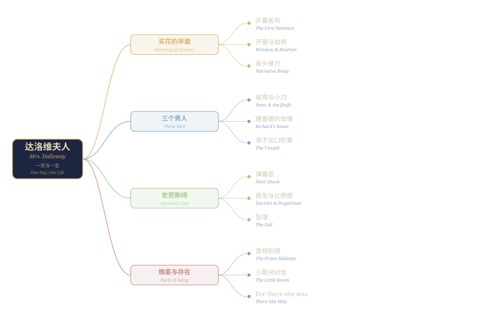

达洛维夫人
〇 · 书籍信息
基本信息
| 书名 | 《达洛维夫人》（Mrs. Dalloway）——书名是婚姻的称谓（Mrs.），小说写的却是一个名字叫克拉丽莎的人：称谓与自我的张力，从标题第一个词就开始了 |
|---|---|
| 作者 | 弗吉尼亚·吴尔夫（1882–1941），现代主义旗手、霍加斯出版社创始人。本书是意识流的教科书：全书约一天，地点几乎只在伦敦街头与两间客厅——空间最小的一天，装下了最多的人生 |
| 结构 | 1923 年 6 月中的一天：克拉丽莎筹备晚宴 ⇄ 史密斯（患弹震症的退伍兵）在帕丁顿与医生之间往返——两条线从不相遇，却在「死亡」的深流下暗合 |
| 体裁 | 意识流长篇：叙述在人物之间无声接力（从街头一人跳进另一人脑内）；钟声（大本钟）是全书的节拍器 |
| 一句话 | 克拉丽莎的晚宴与史密斯的自尽，是同一场战争的两个战场：一个用鲜花与请柬抵抗死亡，一个用坠落加入死亡——而伦敦的大本钟照旧敲响。 |
一 · 核心主题总览
一天的城市漫游里埋着四组母题：① 一天与一生（时间的主观性）
全书物理时间约十四小时，心理时间横跨三十年：一次开窗可以装下整个青春（伯顿的清晨），一次钟声可以打断一段回忆。吴尔夫证明：日历是公共的，时间是私人的。
② 生与死的合流
克拉丽莎与史密斯终生未见，却在书的深处互为镜像：她听说了他的死，独自走进小房间，「不知为何感到与他相似——那个自杀的年轻人」——幸存者的惭愧，是全书最深的一句。
③ 社交与孤独
克拉丽莎是「完美女主人」：她爱人类的方式是聚拢人群；代价是每晚宴席散后独自面对「她到底给了什么」的空账。晚宴是她的宗教，孤独是她的修行。
④ 女性、婚姻与「房间」
她嫁给了「可靠的」理查德而不是「会点燃她的」彼得——三十年来这选择被反复重估。她的阁楼睡房（「bed in the attic」）是她唯一的私有领地——《一间自己的房间》的散文观点，在小说里以一间阁楼提前到场。
二 · 第一段 买花的早晨—— 清晨 · 伯顿 · 大本钟 ——
开窗与整个青春
第一句即名句：「达洛维夫人说她要亲自去买些花。」——人称从 Mrs. 开始，一页之内就被拆回 Clarissa。开窗的瞬间装下三十年前伯顿的夏天：铰链声、海浪般的空气、彼得·沃尔什那句「你更喜欢男人而不是花椰菜」——吴尔夫的意识流开法：一个感官引信（合叶的吱吱声），引爆三十年的火药库。
◆ 语言学习 · 开篇 · 意识流
| lark /lɑːk/ | n. 百灵鸟；嬉戏 —— 例句：What a lark! What a plunge!（开篇名句）。lark about「嬉闹」一词两义 |
|---|---|
| plunge /plʌndʒ/ | n./v. 一跃而入 —— 例句：plunged at Bourton into the open air（原文）。plunge into「扎进」；写「投身」的标准动词 |
| hinge /hɪndʒ/ | n. 合叶，铰链 —— 例句：the squeak of the hinges（感官引信）。hinge on「取决于」一词两义 |
| rook /rʊk/ | n. 白嘴鸦 —— 例句：the rooks rising, falling（原文）。伦敦公园的常客鸟；与 crow 辨析 |
句型 ｜ 「What a lark! What a plunge! For so it had always seemed to her, when, with a little squeak of the hinges, which she could hear now, she had burst open the French windows…」——感叹 × 2 + 过去完成时回跳 + 关系从句层层嵌套：意识流的标准语法：感叹是开关，时态是时间机器，从句是走廊。
伦敦街头与人物的接力
去花店的路上，叙述像接力棒一样在行人之间传递：克拉丽莎 → 斯克罗普·珀维斯 → 史密斯（看见飞机拉烟想起自己逃跑的念头）→ 街上的路人。城市是意识的交通系统：一辆汽车回火（backfire），半条街的人脑同时震动——这是吴尔夫对现代性的定义：公共事件成为私人记忆的引信。
◆ 语言学习 · 城市 · 接力
| backfire /ˈbækfaɪə/ | n. 回火，放炮 —— 例句：the motor car backfiring（事件引信）。back-前缀词族：backlash/backdrop |
|---|---|
| stigma? →(改) shell shock | n. 弹震症 —— 史密斯的病历：一战的精神遗产；现代 PTSD 的前身 |
| gliding /ˈɡlaɪdɪŋ/ | v. 滑翔 —— 例句：the aeroplane gliding（飞机拉烟）。glide v./n.；写「轻盈移动」首选 |
| relay /ˈriːleɪ/ | n./v. 接力 —— 叙事技法词：narrative relay（叙述接力）——吴尔夫的专利 |
习语 ｜ the rhythm of the city 城市的节奏——伦敦在本书是一个会呼吸的器官；fall in love with life 爱上生活——克拉丽莎的病与药。她的城市观察术：把每一条街读成一段乐谱。
三 · 第二段 彼得 · 理查德 · 旧爱—— 三个男人 · 一种选择 ——
彼得·沃尔什与刀与笑
修表匠那边出来，彼得从印度回来了：随身一把小刀、一肚子旧怨。他问「你幸福吗，克拉丽莎？」——这个问题她三十年没有答案。吴尔夫写旧爱重逢的教科书：刀在指尖转、记忆在指间漏——男人用物件说话，女人用缺席回答。
◆ 语言学习 · 旧爱 · 重逢
| pocket-knife /ˈpɒkɪtnaɪf/ | n. 小折刀 —— 彼得的道具：刀尖开合=欲言又止——吴尔夫给他的「语法」 |
|---|---|
| grumpy? →(改) grumpiness /ˈɡrʌmpinəs/ | n. 坏脾气 —— 例句：his grumpiness（开篇回忆清单）。grumpy adj.；爱一个人的清单里连坏脾气都是记忆 |
| Sikh? →(改) India /ˈɪndiə/ | n. 印度 —— 彼得五年后的来处：帝国时代的浪漫底色与失意者的退路 |
| relish? →(改) triviality /ˌtrɪvˈæləti/ | n. 琐碎小事 —— 例句：sayings about cabbages（花椰菜语录）。爱是记住对方说过的蠢话——全书最动人的定义之一 |
句型 ｜ 「it was his sayings one remembered; his eyes, his pocket-knife, his smile, his grumpiness and, when millions of things had utterly vanished—how strange it was!—a few sayings like this about cabbages.」——列举清单 + 插入感叹：记忆的清单式写法：爱的证据不是大事，是没理由记住的小事。仿写一段你的「sayings 清单」。
理查德的花与「我爱你」的失败
中午，理查德带着一大束玫瑰回家——想说「我爱你」而说不出口，「话到嘴边变成了：‘我送的。’」吴尔夫写英国式婚姻的精度：爱以赠礼抵达，语言被交通取消。克拉丽莎独自在阁楼床上读诗人回忆录读到阵亡者的名字——她在午睡里参加了一场没有请柬的葬礼。
◆ 语言学习 · 婚姻 · 赠礼
| roses /ˈrəʊzɪz/ | n. 玫瑰（复数）—— 理查德的语言替身；flowers/roses 的称谓差：全书开篇是 flowers，丈夫只送得起 roses |
|---|---|
| verge /vɜːdʒ/ | n. 边缘 —— 例句：on the verge of saying「I love you」（原文）。on the verge of doing「濒于」；爱的失败在边缘完成 |
| casualty /ˈkæʒuəlti/ | n. 阵亡者 —— 例句：casualty lists（回忆录里）。一战词汇进入闺房阅读——战争从未离开伦敦 |
| attic /ˈætɪk/ | n. 阁楼 —— 例句：her little attic room（克拉丽莎的私域）。the attic bed：一间自己的房间的小说版 |
习语 ｜ say it with flowers 用花说话——理查德的方言；the unsaid 未说出口的——吴尔夫小说的主角。全书对白的空隙比词多：沉默的体量就是婚姻的体量。
四 · 第三段 史密斯线—— 医生 · 战争 · 坠落 ——
霍尔姆斯与布拉德肖医生
史密斯从战场上回来，带着「以王的名义、以不可磨灭的荣光」的幻觉；霍尔姆斯医生说他「没有病」，布拉德肖医生开出「歇息疗法」——吴尔夫用两个医生写医学对痛苦的翻译失败：症状被转译成「比例感」（sense of proportion）的道德缺陷。体制听不懂个人的死讯——这是全书最冷的诊断。
◆ 语言学习 · 医疗 · 体制
| proportion /prəˈpɔːʃn/ | n. 比例 —— 例句：a sense of proportion（布拉德肖的圣词）。医学话术的道德化：把痛苦说成失衡 |
|---|---|
| rest cure | 歇息疗法 —— 维多利亚对精神痛苦的处方：休息、隔离、进食——吴尔夫本人多次被施行的疗法 |
| proportion? →(改) mania? →(改) dissolution? →(改) derange? →(改) morbid /ˈmɔːbɪd/ | adj. 病态的 —— 例句：morbid thoughts（医生口中）。morbidity n.；疾病词汇的道德化用法 |
| inquest /ˈɪŋkwest/ | n. 死因研讯 —— 例句：the inquest on the young man（晚报新闻）。法律用词进入叙事——死亡被公文接收 |
句型 ｜ 「He was not in the least sorry for Septimus; he was just a doctor.」式句——吴尔夫医生的语法：名词开脱动词（He was just a doctor）：身份词成了行为的赦免令。议论文写作警惕同款：just a/only a 后面的名词，常在偷偷免责。
坠落与小房间的对坐
医生上门收人前一刻，史密斯从窗台跳下——用死亡完成了唯一一次自主的就诊决定。晚上，晚报把这消息带进布兰顿夫人家的晚宴；克拉丽莎听后独自走进小房间：「不知为何感到与他相似」——她的幸存是一笔欠款，晚宴是她偿还的方式。她回到客厅：「For there she was.」全书以五个词收束。
◆ 语言学习 · 死亡 · 收束
| shame? →(改) throb /θrɒb/ | v. 悸动 —— 例句：her heart throbbing（小房间段）。throb with；身体的语法 |
|---|---|
| obliterate? →(改) defile? →(改) ignoble? →(改) solitude /ˈsɒlɪtjuːd/ | n. 独处 —— 例句：to stand by the open window in solitude（小房间）。与 loneliness 辨析：solitude 是选择 |
| salaam? →(改) dignity /ˈdɪɡnəti/ | n. 尊严 —— 史密斯之死被克拉丽莎读出的词：他保住了自己的东西——全书把自杀译成了一种主权行为 |
| salvation? →(改) preside? →(改) permeate? →(改) for there she was | 全书的最后五个词：For there she was——存在本身即为答案 |
句型 ｜ 「For there she was.」——五个词收束一部长篇：For（承接前文的领悟）+ there（地点=存在）+ she was（纯粹的存在时态）。「小句收大书」的终极示范：结尾越轻，回声越重；仿写一句五词结尾试试。
五 · 第四段 晚宴与存在的账—— 客人 · 领袖 · For there she was ——
首相出席与「我们都是平庸的」
晚宴开席：首相到场、贵妇低语、彼得远远旁观——克拉丽莎在楼道里听见自己的疑问：她给了这个世界什么？吴尔夫给「社交」的正名：聚拢人群也是一种创造，代价是主人永远不能入席。彼得看见她出现，「一下子被狂喜击中」——旧爱重逢的第二次，胜过第一次。
◆ 语言学习 · 晚宴 · 价值
| hostess /ˈhəʊstəs/ | n. 女主人 —— 克拉丽莎的职业：-ess 后缀的女性称谓史；hostessing as art |
|---|---|
| prime minister | 首相 —— 晚宴的贵宾：权力的到席反衬私人价值的问题——她要的从来不是首相的点头 |
| jolt /dʒəʊlt/ | n. 震动 —— 例句：it jolted him（彼得的狂喜）。jolt sb；物理动词写情感冲击 |
| ecstasy /ˈekstəsi/ | n. 狂喜 —— 例句：thrown into ecstasy（彼得）。ecstatic adj.——重逢的最强音 |
习语 ｜ Here I am once more——旧爱重逢的第三次语法：第一次是 ask（你幸福吗），第二次是 see（看见她），第三次是 For there she was——同一个「在场」被三个人各说了一次。
为什么这本书今天仍锋利
一百年后重读，锋利处在于它对「正常」的怀疑：医生的「比例感」、战争的「荣光」、社交的「得体」——吴尔夫把每个大词都放到显微镜下。现代读者带着 PTSD、心理健康与「社交疲劳」的经验回来，会发现 1925 年的伦敦就是现在：一条回火引信、两套互相听不懂的语言、和一个独自走进小房间的人。
◆ 语言学习 · 现代 · 共振
| resonate /ˈrezəneɪt/ | v. 共振 —— 例句：the novel resonates a century later（重读）。经典=持续共振 |
|---|---|
| stigma /ˈstɪɡmə/ | n. 耻辱感 —— 例句：the stigma of mental illness（现代回读）。pl. stigmata；史密斯的第二场战争 |
| vanish /ˈvænɪʃ/ | v. 消失 —— 例句：millions of things had utterly vanished（开篇）。vanishing point 透视术语；记忆的透视法 |
| salute? →(改) summon /ˈsʌmən/ | v. 召唤 —— 例句：summon the party together（女主人技能）。summon up courage；召集与召回（回忆）一词两用 |
句型 ｜ 「She had a perpetual sense… of being out, out, out—out of the window, out into the sea」式重复——吴尔夫用重复制造呼吸：重复不是啰嗦，是意识的水位线；写情绪段落，把最重要的词重复三次，读者就会沉下去。
六 · 人物图鉴与成长弧线—— 主角配角 · 一张表看穿 ——
主要人物
克拉丽莎·达洛维 Clarissa Dalloway——女主人：52 岁，伦敦上流社会，晚宴的建造师。弧线：清晨买花 → 一天的回忆风暴 → 小房间里的死亡对坐 → 晚宴与 For there she was。她抵抗死亡的方式是聚拢人间，她面对死亡的方式是独自一人。
史密斯 Septimus Warren Smith——退伍兵、诗人气质的碎裂者：全书的暗线主角。弧线：街头震颤 → 医生的误诊 → 坠落。他是克拉丽莎的镜像：同一场战争，他正面接了。
彼得·沃尔什 Peter Walsh——旧爱：印度归来的失意者，随身一把小刀。弧线：问「你幸福吗」→ 嫉妒理查德 → 晚宴狂喜。他爱她的方式是提问，理查德爱她的方式是玫瑰——吴尔夫不裁决。
理查德·达洛维 Richard Dalloway——丈夫：体面、可靠、笨嘴。「我爱你」说不出口。他代表被选择的安全：安全不是错的，只是永远欠一句话。
布拉德肖爵士 Sir William Bradshaw——名医：比例感的祭司。开出的处方葬送了史密斯。体制之恶不用狰狞来写——他只是「just a doctor」，恰好手握权力。
次要人物（功能位）
| 赖利 Rezia | 史密斯的意大利妻子：缝帽子、拉医生、独自崩溃——全书最孤独的看护者：她同时失去丈夫与语言 |
|---|---|
| 伊丽莎白 Elizabeth | 女儿：与克拉丽莎之间横着基尔曼小姐——母女的战争以第三方代理 |
| 基尔曼 Miss Kilman | 家庭教师、宗教仇恨型人格：全书最不讨喜也最悲哀的人——她夺取伊丽莎白的武器，是让全世界欠她 |
| 大本钟 Big Ben | 不在场的角色：全书节拍器——每敲一次，故事抬头对一次表 |
七 · 主题与象征—— 每个道具都在说话 ——
| 大本钟 ↔ 公共时间 | 整点的权威：日历是公共的，时间是私人的——钟声把所有人的私时间强行对表 |
|---|---|
| 飞机拉烟 ↔ 现代的启示 | 半条街仰望同一片字母：公共事件成为私人记忆的引信——现代性的第一课 |
| 鲜花 ↔ 克拉丽莎的宗教 | 亲自买花、亲手插瓶：抵抗死亡的花艺学——她给生活的祭坛摆花 |
| 阁楼床 ↔ 一间自己的房间 | 病中独处的窄床：她的私有领地——散文的观点在小说里以家具到场 |
| 小房间 ↔ 死亡的会客厅 | 晚宴中途的退席：与死者对坐的十分钟——幸存者的惭愧需要一个房间 |
| For there she was ↔ 存在的收据 | 最后五个词：没有解决，没有救赎，只有「她在这儿」——存在本身即为答案 |
八 · 写作手法赏析—— 怎么写，就能怎么学 ——
① 叙述的接力
一句话之内从一个人的脑子跳到另一个人的脑子——城市意识的交通系统；学它先学「切人的引信」：一声回火、一缕烟、一个背影。
② 一天装一生
物理时间十四小时，心理时间三十年——时间的主观性写成嵌套回跳：过去完成时是时间机器。
③ 双线不相交的镜像
克拉丽莎线与史密斯线终生未见而同构——平行线的交点放在读者脑子里：这是现代小说最高级的合并方法。
④ 物的语法
彼得的刀、理查德的玫瑰、史密斯的帽子——给每个人物一件会说话的道具：欲言又止用刀尖开合来写。
⑤ 小句收大书
For there she was——结尾越轻，回声越重；金句收束的反向操作：五个字压一部长篇。
九 · 名段欣赏—— 原文精读 · 逐段赏析 ——
十 · 金句摘录—— 14 条 · 中英对照 · 带出处 ——
"Mrs. Dalloway said she would buy the flowers herself."达洛维夫人说她要亲自去买些花。—— 开篇第一句
"What a lark! What a plunge!"多么动听的百灵！多么迅疾的举动！—— 开篇（PDF 译文）
"For there she was."因为她就在那儿。—— 全书结尾
"Fear no more the heat o' the sun."不必再惧怕骄阳的热度。—— 全书复现（引自《辛白林》挽歌）
"空气清新得仿佛是特意送给海滩上的孩子们似的。"—— 开篇（PDF 译文）
"记忆清单：他的眼睛、他的小刀、他的笑、他的坏脾气——以及几句关于花椰菜的话。"—— 开篇
"「你幸福吗，克拉丽莎？」——这个问题她三十年没有答案。"—— 彼得重逢段
"理查德想说我爱你，话到嘴边变成了：「我送的。」"—— 午间段
"她感到与他相似——那个自杀的年轻人。"—— 小房间段
"他保住了自己的东西。"—— 小房间段
"她喜欢行走——把伦敦读成乐谱。"—— 全篇底色
"大本钟敲响——先是一个「了」，再是一个「了」，最后落定成「了」。"—— 钟声段
"她给了这个世界什么？——晚宴中途的疑问。"—— 晚宴段
"彼得一下子被狂喜击中。"—— 晚宴段
十一 · 拓展阅读—— 原文 · 词条 · 译文 ——
原文与文本
- Mrs. Dalloway — Project Gutenberg (Australia) —— 公版全文；与外研社双语对照精读
- Mrs. Dalloway — Wikipedia —— 创作史（The Hours → 本书）与改编谱系
作家与谱系
- Virginia Woolf — Wikipedia —— 生平、霍加斯出版社与《一间自己的房间》
- Stream of consciousness — Wikipedia —— 意识流技法词条：乔伊斯—吴尔夫—福克纳的谱系
十二 · 个人感悟与心得—— 三点心得 ——
买花 · 对坐 · For there she was
这本书教的最重要的一件事，是把「死亡」和「生活」放进同一本账。克拉丽莎用晚宴抵抗死，史密斯用坠落加入死——两条线终生未见，却在小房间那十分钟里对上账：幸存者知道自己欠着什么。现代读者带着心理健康的经验回来，会发现她对「正常」的怀疑比任何科普都早了一百年。 彼得与理查德的对照是婚姻辩论的永恒题面：点燃你的人 vs 安稳的人。吴尔夫的高明是不裁决——她把裁决权交给那个说不出口的「我爱你」：安全不是错的，只是永远欠一句话。读完这本书，对「当年那个选择」的反复重估会安静下来：账要结清，先得承认欠条存在。 学英文层面，意识流没有想象中可怕：跟着钟声读、跟着引信读（回火、烟、铰链声）、跟着道具读（刀、玫瑰、帽子）——三根绳子牵着走，长句自然就通了。写作上最大的收获是「清单式记忆」：把爱写成眼睛、刀、笑、坏脾气与花椰菜——比一切抒情都准。—— 吴尔夫 1941 年投河前留给她的话：不能再战。她的句子替她继续作战。（For there she was.）
十三 · 一页速查（复习用）
| 全书骨架 | 6 月中的一天：买花 → 街头 → 旧爱重逢 → 史密斯线 → 小房间 → 晚宴 → For there she was |
|---|---|
| 双线镜像 | 克拉丽莎（用晚宴抵抗死）⇄ 史密斯（用坠落加入死）：平行线在读者脑内相交 |
| 必背表达 | what a lark! what a plunge! / on the verge of saying / a sense of proportion / for there she was |
| 两大装置 | 大本钟（公共节拍器）· 叙述接力（意识的交通系统） |
| 一句话总结 | 存在本身即为答案——结尾五个词，压住一整天的伦敦 |
十四 · 全书思维导图—— 一图纵览 ——

一图纵览全书骨架 · 中英双语对照 · 手机端可左右滑动查看全图